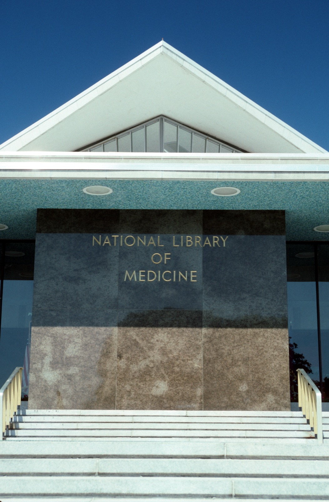

Executive Summary
이 글은 2026년 10월 7일 바이오허브가 미국 에너지부, 국립보건원, 구글 딥마인드, 메타, 아이소모픽랩스와 함께 발표한 18억 달러 규모의 생물 데이터 사업을 읽는다. 새 모델을 내놓는 발표가 아니다. 약물이나 돌연변이 같은 자극에 세포가 어떻게 반응할지 컴퓨터로 미리 보는 '가상 세포'를 만들려는데 그것을 학습시킬 데이터가 아직 모자란다는 것이, 이 돈이 모인 이유다.
금액을 쪼개면 18억 달러 가운데 이날 처음 공개된 약정은 8억 달러다. 에너지부가 5년간 5억 달러 이상을 내고 세 회사가 합쳐 3억 달러를 낸다. 나머지 10억 달러는 바이오허브가 지난 4월에 이미 약속한 5억 달러와, 국립보건원이 그동안 5억 달러 넘는 연방 예산으로 만들어 둔 데이터의 접근권이다. 그리고 발표문이 바이오허브의 몫으로 적은 동사는 데이터를 만든다가 아니라 표준화한다였다.
본문에 옮긴 금액과 인용과 일정은 바이오허브 발표문, 미국 에너지부 과학국 보도자료, 로이터 10월 7일 기사에서 가져왔다. 새로 공개된 약정과 다시 합산된 몫을 갈라 세는 2절, 4월과 10월 발표문의 낱말 차이를 역할 재정의로 읽는 3절, 그리고 상업 파트너의 선접근 기간을 표준화에 치른 값으로 읽는 5절은 어느 당사자의 설명도 아니라 이 글의 해석이다.
주요 수치
출처: 바이오허브 발표문(2026-10-07), 로이터(2026-10-07).
8억 달러
10월 7일에 처음 공개된 약정
에너지부 5억 달러 이상에 세 회사 3억 달러를 더한 값이다
수조 개
예측 모델에 필요할 세포 수
지금 있는 데이터는 수억 개 규모라고 바이오허브 과학 책임자가 말했다
1년
첫 데이터셋이 나오기까지
작동하는 예측 모델은 5년 뒤를 목표로 잡았다
0회
4월 출범문의 'AI-ready'·'standardize'
10월 발표문은 첫 두 문단 안에서 두 낱말을 다 쓴다
10월 7일, 정부 두 기관과 기업 세 곳이 합류했다
바이오허브는 마크 저커버그와 프리실라 챈 부부가 세운 비영리 연구기관이다. 이곳이 2026년 10월 7일에 낸 발표문에 적힌 18억 달러의 내용물은 현금만이 아니다. 자금과 데이터와 연산과 새 측정 기술을 모두 합쳐 18억 달러이고, 발표문은 그것을 "AI가 바로 학습할 수 있는 생물 데이터를 만드는 일에 지금까지 나온 가장 큰 규모의 조율된 약정"이라고 적었다.
목표는 가상 세포다. 국립보건원 부원장 니콜 클라인스트로이어가 발표문에 남긴 문장이 그 목표를 가장 짧게 설명한다. "자원과 전문성을 합치면, 어떤 세포가 개입에 어떻게 반응할지 예측할 만큼 충분한 생물학적 복잡성을 갖춘 보편 세포 모델의 개발을 앞당길 수 있다." 신약 후보를 실험실에 넣기 전에 화면에서 먼저 돌려 보는 일이 가능해진다는 뜻이다.
에너지부는 돈에 설비를 얹는다. 에너지부 과학국이 같은 날 낸 보도자료는 5년간 5억 달러 이상을 세포 기초 연구에 넣겠다고 적으면서, 함께 내놓을 자산으로 엑사스케일 슈퍼컴퓨터 클러스터, 유전체 주석을 다루는 합동유전체연구소, 미생물·분자 연구를 맡는 환경분자과학연구소, X선과 중성자 산란 설비, 극저온전자현미경, 그리고 스스로 실험을 돌리는 자율 실험실 사업을 열거했다. 이 보도자료는 이번 협력이 트럼프 대통령의 '제네시스 미션' 행정명령을 이행하는 일이라고도 밝혔다. 에너지부 과학담당 차관 다리오 길은 "에너지부 국립연구소의 역량과 전문성을 자선 쪽과 과학계의 지도력에 합쳐 개방적이고 데이터 중심적인 과학의 새 기준을 세우고 있다"고 말했다.

이 사업 자체는 10월에 시작된 것이 아니다. 바이오허브가 '버추얼 바이올로지 이니셔티브'라는 이름으로 5억 달러를 걸고 출범시킨 날이 2026년 4월 29일이다. 그때 함께 이름을 올린 곳은 앨런연구소, 아크연구소, 브로드연구소, 웰컴 생어연구소, 휴먼 셀 아틀라스, 휴먼 프로테인 아틀라스, 빌리언 셀스 프로젝트, 르네상스 필랜스로피였고 엔비디아가 기술 파트너로 들어갔다. 반년 뒤 여기에 정부 두 기관과 기업 세 곳이 붙으면서 합산 규모가 18억 달러가 됐다.
18억 달러 가운데 이날 처음 나온 약정은 8억이다
발표문에 적힌 네 몫을 더하면 18억 달러가 정확히 맞아떨어진다. 다만 네 몫은 성격이 서로 다르다. 어떤 것은 이날 처음 나온 약정이고, 어떤 것은 이미 쓴 예산을 다시 센 것이다.
| 주체 | 금액 | 성격 |
|---|---|---|
| 미국 에너지부 | 5억 달러 이상 | 10월 7일 처음 공개. 5년간 실험실 측정과 모델링, 연산에 투입 |
| 구글 딥마인드·메타·아이소모픽랩스 | 3억 달러 | 10월 7일 처음 공개. 세 회사 합산 투자 |
| 바이오허브 | 5억 달러 | 4월 29일 출범 때 이미 약속한 자금. 4억 달러는 자체 측정 기술, 1억 달러는 외부 연구 지원 |
| 미국 국립보건원 | 5억 달러 이상 | 새 현금이 아니라, 과거 연방 예산으로 구축된 데이터셋·저장소·지식베이스의 조율과 제공 |
▲ 네 몫의 성격 구분 | 금액과 설명은 바이오허브 발표문과 에너지부 과학국 보도자료에서 가져왔다. 성격 열의 구분은 이 글의 정리다.
국립보건원 몫의 문장이 특히 분명하다. 발표문은 국립보건원이 "5억 달러를 넘는 과거 연방 투자로 개발된 데이터셋과 저장소, 지식베이스의 제공을 조율한다"고 적었다. 수표를 새로 끊는다는 말이 아니라, 이미 국민 세금으로 만들어 둔 창고의 열쇠를 내놓는다는 말이다. 바이오허브 몫 5억 달러 역시 반년 전 출범 때 발표된 숫자가 누적 합계에 다시 들어온 것이다.
이렇게 갈라 놓고 보면 숫자가 줄어든 것처럼 읽히기 쉬운데, 그렇게만 읽으면 중요한 것을 놓친다. 국립보건원이 내놓는 것은 돈보다 구하기 어려운 물건이다. 수억 달러를 들여도 하루아침에 모을 수 없는 생물의학 데이터가 이미 연방 저장소에 쌓여 있고, 그 접근권과 조율이 이번에 테이블 위로 올라왔다. 새 돈 8억 달러가 사는 것은 새 측정이고, 기존 10억 달러가 가져오는 것은 쌓인 측정이다.
국립보건원 쪽은 원본 데이터 더미에서 끝나지 않는다. 발표문은 국립보건원이 '바이오 제네시스 미션'을 통해 기존 생물의학 데이터셋과 국가 데이터 기반, 연구 프로그램을 모아서 더 넓은 과학 공동체가 AI에 바로 쓸 수 있는 자원을 만드는 일을 돕는다고 적었다. 이름을 든 자산은 국립의학도서관이 목록화한 국가 생물의학 저장소와 국립생명공학정보센터, 그리고 NIH 커먼 펀드 프로그램들이다. 그중 커먼 펀드 프로그램들은 생물학 아틀라스와 공유 데이터 표준, AI 학습용 생물의학 데이터셋을 이미 개발하고 있다. 규격을 맞추는 작업이 이번에 처음 시작되는 것이 아니라, 연방 예산으로 이미 돌아가던 부분이 여기에 붙는다는 뜻이다.

네 몫을 성격으로 다시 묶으면 질문이 하나 남는다. 새로 측정할 데이터와 이미 쌓여 있던 데이터를 한 모델에 함께 넣으려면, 둘이 같은 모양이어야 한다. 그 일을 누가 하는지가 발표문 안에 적혀 있다.
바이오허브에 맡겨진 동사는 '표준화한다'
발표문에서 바이오허브의 몫을 지정한 문장은 짧다. "바이오허브는 국립보건원과 함께 이 데이터셋들을 AI 모델 학습용으로 표준화한다." 같은 발표문의 다른 대목은 그 일을 조금 더 풀어 적었다. 여러 분야와 산업의 파트너를 모아 "각자의 데이터셋이 하나로 맞물려 작동하게 하는 층"을 만들겠다는 것이고, 그 층의 내용물로 공유 표준과 공통 식별자, 그리고 단일 접근 지점을 들었다.
데이터를 다뤄 본 사람에게 이 세 가지는 익숙한 목록이다. 서로 다른 실험실이 같은 유전자를 다른 이름으로 부르고, 같은 세포주를 다른 식별자로 적고, 같은 측정값을 다른 단위와 다른 파일 규격으로 남긴다. 각각은 다 쓸 수 있는 데이터인데, 모아서 하나의 학습 집합으로 만들려는 순간 멈춘다. 공유 표준과 공통 식별자는 그 멈춤을 푸는 장치다.
그 일이 왜 바이오허브 몫으로 적혔는지는 발표문 뒷부분이 설명한다. 바이오허브는 지난 10년 동안 타뷸라 사피엔스, 오픈셀, 지브라허브 같은 공개 데이터셋 사업을 이끌었고, 여러 기관이 함께 쓰는 데이터 기반인 CELLxGENE과 크라이오ET 데이터 포털을 만들어 운영해 왔다. 단일 접근 지점이라는 말은 이 기관에 새로 내건 구호가 아니라 이미 두 번 지어 본 물건이다. 같은 대목은 그 층을 짓는 일 옆에 자원 둘레로 과학 공동체를 세우는 일을 똑같이 중요하게 올려 놓았다. 기관과 분야를 가로질러 연구자를 모으고 서로 보완되는 역량을 잇는 일을 함께 들었다.
반년 사이에 바뀐 낱말
4월 29일 출범 발표문과 10월 7일 확장 발표문을 나란히 놓고 같은 낱말을 찾아보면 차이가 드러난다. 4월 발표문에는 'AI-ready'도 'standardize'도 'standards'도 나오지 않는다. 데이터 통합을 위한 "공유 틀(shared frameworks for data integration)"이라는 표현이 한 번 있을 뿐이다. 10월 발표문은 첫 문단에서 'AI-ready'를 쓰고, 바로 다음 문단에서 바이오허브의 역할을 'standardize'라는 동사로 지정한다.
| 4월 29일 출범문 | 10월 7일 확장문 | |
|---|---|---|
| 'AI-ready' | 없음 | 첫 문단 포함 여러 차례 |
| 'standardize'·'standards' | 없음 | 바이오허브의 역할을 지정하는 동사로 등장 |
| 데이터를 묶는 일의 표현 | "데이터 통합을 위한 공유 틀" | "공유 표준, 공통 식별자, 단일 접근 지점" |
| 선언된 목표 | "생명의 예측 모델을 만드는 데 필요한 기술과 다중 모드 데이터셋" | AI가 바로 학습할 수 있는 공개 데이터 자원 |
▲ 두 발표문의 낱말 대조 | 출처: 바이오허브 출범 발표(2026-04-29), 확장 발표(2026-10-07). 낱말 유무는 두 페이지 본문을 대조해 확인했다. 그 변화를 역할 재정의로 읽는 것은 이 글이 더한 것이다.
4월에 모인 쪽은 데이터를 만드는 기관들이었다. 앨런연구소도 브로드연구소도 웰컴 생어연구소도 저마다 큰 데이터셋을 가진 곳이다. 10월에 들어온 쪽은 그 데이터를 학습에 쓸 기관과, 이미 만들어 둔 데이터를 쌓아 둔 기관이다. 참여자가 그렇게 바뀌면 병목도 바뀐다. 만드는 사람끼리 모였을 때의 문제가 "더 만들자"라면, 만든 것과 쌓인 것이 한자리에 모였을 때의 문제는 "서로 맞물리게 하자"가 된다.
같은 날 에너지부가 낸 보도자료를 나란히 놓으면 낱말이 한 번 더 갈린다. 에너지부는 과학국과 국립보건원, 바이오허브 세 곳이 양해각서(MOU)에 서명했다고 밝히면서 그 목적을 "생물학에서 초지능(Super Intelligence, SI)의 전선을 넓히는 것"이라고 적었다. 바이오허브 발표문이 같은 협력을 "생물학에서 인공지능의 전선을 넓히기 위해"라고 쓴 자리다. 에너지부가 함께 내놓을 데이터 사업의 공식 명칭에도 그 말이 박혀 있다. 제네시스 미션 산하의 바이오이미징 데이터 사업은 이름 자체가 'SI가 바로 쓸 수 있는 다중 모드 바이오이미징 데이터 구조(LAMBDA)'다. 다리오 길의 인용문도 두 보도자료에서 다르게 실렸다. 바이오허브 쪽에서 길은 이 협력이 "공익을 위해 인공지능을 활용하는 중요한 진전"이라고 말하고, 에너지부 쪽에서 같은 문장은 "생물학에서 초지능을 진전시키는 일은 공익을 위해 새 기술을 활용하는 중요한 진전"으로 적혀 있다. 앞에 붙는 낱말은 그렇게 갈렸지만 뒤에 붙는 말은 같다. 학습에 바로 쓸 수 있는 데이터다.
페블러스가 몇 해째 쓰고 있는 'AI-Ready Data'라는 말이 정부와 빅테크가 함께 낸 예산의 이름으로 그대로 나타났다. 바이오라는 다른 분야에서, 그것도 18억 달러짜리 사업의 간판으로 같은 개념이 올라온 셈이다. 다만 이름이 같다고 해서 그 아래 해야 할 일까지 쉬워지지는 않는다.
세포에는 읽을 도서관이 없다
왜 돈을 모아 데이터부터 만드는지는 바이오허브 과학 책임자 알렉스 라이브스의 말에 담겨 있다. 로이터가 전한 그의 문장은 이렇다. "우리는 생물학의 언어를, 세포의 언어를 담아내야 한다. 그런데 그것이 오늘은 존재하지 않는다."

언어 모델이 빠르게 좋아진 조건을 떠올리면 이 말이 더 분명해진다. 인터넷에는 사람이 수십 년 동안 써 놓은 글이 이미 쌓여 있었고, 모델을 만드는 쪽은 그 더미를 긁어 오면 됐다. 도서관이 먼저 있었고 독자가 나중에 왔다. 세포는 반대다. 긁어 갈 만큼 쌓인 더미가 없으니, 모델을 만들기 전에 책을 써야 한다. 그것도 수십 개 기관이 제각기 다른 장비로 쓴 책을 한 서가에 꽂을 수 있는 모양으로.
필요한 양도 라이브스가 숫자로 밝혔다. 지금 공개된 세포 데이터는 수억 개 규모인데, 정확한 예측 모델을 만들려면 수십억 개가 필요하고 결국에는 수조 개까지 가야 한다는 것이다. 바이오허브 발표문이 측정 기술 쪽에 강조점을 둔 이유도 여기 있다. 발표문이 든 장비는 둘이다. 세포 안을 원자에 가까운 해상도로 들여다보는 극저온전자단층촬영, 그리고 살아 있는 조직 안의 세포를 수백만에서 수십억 개 단위로 찍는 현미경이다.
부족한 것이 양만은 아니다. 발표문은 이 사업이 "지금까지 연구된 것보다 훨씬 많은 세포 종류와 조건에 걸쳐" 개입에 대한 세포 반응 데이터를 넓히겠다고 적었다. 어떤 자극에 세포가 어떻게 반응하는지 배우려면 반응을 관찰해야 하고, 관찰하려면 먼저 자극을 주어야 한다. 그래서 바이오허브가 4억 달러를 쓰겠다고 한 기술 목록에는 측정 장비 외에 공학 도구가 함께 적혀 있다. 분자와 세포, 조직, 개체 수준에서 생물을 만들고 교란하는 도구다. 인터넷 글은 이미 쓰여 있는 것을 긁어 오면 됐지만, 세포 반응 데이터는 누군가 세포를 건드려야 비로소 생긴다.
일정은 두 지점으로 제시됐다. 첫 데이터셋이 나오기까지 약 1년, 작동하는 예측 모델까지 5년이다. 라이브스는 이 일이 보통은 수십 년 걸릴 작업이라며, 그것을 5년으로 압축하는 것이 목표라고 말했다.
같은 진단이 모델을 만드는 쪽에서도 나왔다. 구글 딥마인드에서 과학 분야 AI를 맡고 있는 푸시미트 콜리는 발표문에서 이렇게 말했다. "가상 세포를 만드는 일은 생명의 작동 원리를 이해하는 열쇠이자 과학이 함께 풀어야 할 큰 난제다. 살아 있는 세포가 어떻게 행동하고 변화에 어떻게 반응하는지 보여 주는, 전례 없는 규모의 공개 실험 데이터 없이는 이 난제를 풀 수 없다." 아이소모픽랩스 사장 맥스 재더버그의 문장은 규모 쪽을 짚었다. "예측 시스템 생물학을 풀 데이터를 만들려면 오늘날 어떤 단일 조직이 생산할 수 있는 한계를 넘어서야 한다." 모델을 만드는 두 회사가 자기 차례에 말한 것은 모델이 아니라 데이터였다.
기업 돈이 들어간 데이터는 나중에 공개된다
발표문은 이 사업의 결과물을 "연구 공동체를 위한 공개 자원"이자 "개방된 표준 데이터 공용지"라고 부른다. 그런데 언제 누구에게 공개되는지는 발표문에 적혀 있지 않다. 그 대목은 같은 날 로이터 인터뷰에서 나왔다.
로이터 기사는 이렇게 적었다. "데이터셋은 결국 공개되지만, 그 비용을 댄 기업들은 먼저 출발한다." 라이브스의 설명이 뒤에 붙는다. "상업 자금 제공자와는 엠바고 기간을 둔다. 그 기간 동안 해당 그룹이 데이터로 작업할 수 있고, 그 뒤에 공개된 과학 자원이 된다." 같은 기사에서 라이브스는 나란히 진행되는 정부 자금 작업에는 그런 제한이 없다고 밝혔고, 제약사와 자선재단에도 참여를 제안할 계획이라고 덧붙였다.
기간이 얼마인지는 자료마다 다르다. 로이터는 엠바고가 있다는 사실만 전하고 기간을 적지 않았다. 1년이라는 숫자는 액시오스 보도에서 나왔고, 다른 매체들이 그 보도를 인용해 "1년 선접근"으로 전하고 있다. 바이오허브 발표문 자체에는 기간이 없다. 첫 데이터셋이 약 1년 뒤에 나온다는 일정을 함께 놓고 보면, 이 조건이 실제로 작동하기 시작하는 시점도 그 무렵이다.
여기서 읽히는 것은 설계의 모양이다. 표준화와 통합은 참여자들이 선의로 모여야 되는 일이 아니라, 먼저 쓸 권리라는 대가를 치러야 돌아가는 일로 설계됐다. 정부 자금으로 만든 데이터는 즉시 공개하고 기업 자금으로 만든 데이터는 일정 기간 뒤에 공개한다는 두 갈래 규칙이, 공개 데이터라는 이름 아래에서 민간 자금을 끌어오는 장치다. 그러므로 이 돈이 사는 물건에는 합의도 들어간다. 서로 다른 동기를 가진 참여자들을 같은 규격에 맞추게 만드는 합의다. 바이오허브가 이렇게 설명한 적은 없다. 엠바고에서 표준화의 값을 읽은 것은 이 글이다.
페블러스가 이 발표를 주목하는 이유
이 발표를 보통은 저커버그가 또 큰돈을 냈다는 소식으로 읽는다. 데이터를 다루는 자리에서 먼저 보이는 것은 돈의 크기가 아니라 돈이 사려는 물건이다. 모델을 사는 발표가 아니고, 심지어 데이터만 사는 발표도 아니다. 흩어져 있는 데이터가 한 모델 안에서 서로 맞물리게 만드는 일에 값이 매겨졌다.
다섯 달 전 이 블로그에 올린 글이 같은 자리를 다른 각도에서 짚은 적이 있다. 엔비디아와 아크연구소 등이 연 가상 세포 챌린지의 결과를 분석한 「GPU는 충분했다, 부족한 건 데이터였다」이고, 1,200개 넘는 팀이 제출한 결과에서 가장 큰 모델이 이기지 못했다는 사실을 다뤘다. 그 글의 요약 문단에는 자본과 관심이 모델 위가 아니라 그 아래 데이터 층으로 옮겨 가고 있다는 근거로 네 가지가 나열돼 있었고, 그중 하나가 2026년 1월 아크연구소와 타호, 바이오허브가 함께 내놓은 1억 2천만 세포 약속이었다. 그 요약 문단에서 한 줄로 지나간 이름이 다섯 달 뒤 18억 달러짜리 발표의 중심에 서 있다.
그래서 이 발표가 남기는 물음은 금액이 아니라 가능성 쪽이다. 돈으로 데이터를 만들 수는 있다. 측정 장비를 사고 실험을 돌리고 사람을 쓰면 세포 수는 올라간다. 서로 맞물려 학습에 쓰일 수 있게 만드는 일도 같은 방식으로 되는가. 바이오허브는 된다는 쪽에 섰고, 기술만으로는 안 된다는 것을 아는 듯 먼저 쓸 권리라는 조건을 함께 설계했다. 첫 데이터셋이 나오는 1년 뒤에 이 설계가 답을 내놓을 것이다.
규모는 다르지만 같은 구조가 기업 안에서도 자주 보인다. 부서마다 데이터는 있는데 한 모델에 넣으려니 식별자가 어긋나 있고 단위가 다르고 기준 시점이 제각각인 상황은 흔하다. 이럴 때 확인해 볼 것은 세 가지다. 우리가 가진 데이터셋들이 같은 대상을 같은 이름으로 부르고 있는가. 서로 다른 출처를 합칠 때 그 일을 맡은 사람이 정해져 있는가. 그리고 데이터를 내주는 쪽과 받아 쓰는 쪽 사이에 무엇을 주고받는지가 명시돼 있는가. 세 번째 물음이 바이오허브가 엠바고로 답한 자리다.
여기까지 읽어 주셔서 감사하다. 발표 원문은 바이오허브 뉴스룸에서, 자금과 인터뷰를 함께 전한 기사는 로이터에서 볼 수 있다. 서로 다른 출처의 데이터를 한 학습 집합으로 합쳐 본 경험이 있다면, 어느 대목에서 가장 오래 멈췄는지 나눠 주시면 좋겠다.
참고문헌
공식 발표
- 1.Biohub. (2026-10-07). "Open data for predictive AI models of biology: $1.8 billion committed." Biohub Newsroom.
- 2.Biohub. (2026-04-29). "Virtual Biology Initiative." Biohub Newsroom.
- 3.U.S. Department of Energy, Office of Science. (2026-10-07). "DOE, NIH, and Biohub Partner to Build Foundational Data for Predictive Biological Super Intelligence Models."
보도
- 4.Krystal Hu. (2026-10-07). "US government, Google join Zuckerberg-backed Biohub in $1.8 billion push for AI biology data." Reuters.
- 5.The Next Web. (2026-10-08). "Biohub, Meta, Google DeepMind and the US pool $1.8bn for AI biology data."
- 6.Bioengineer.org. (2026-10-07). "Global Coalition Commits $1.8 Billion to Build Open Data for AI Models of Biology."
페블러스 선행 글
- 7.페블러스. (2026-05-12). "GPU는 충분했다, 부족한 건 데이터였다." 페블러스 블로그.